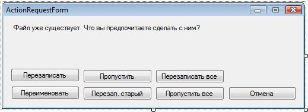

| Тема 8. Редактирование объектов. | ||
| Назад | ||
11.2. Редактирование объектовСейчас мы убьем сразу двух зайцев: рассмотрим еще один подход к редактированию и узнаем, как работать с компонентом ListView в виртуальном режиме. Допустим, что у нас есть очень большой массив данных — например, список сотрудников крупного предприятия. Мы знаем их точное количество — 10 тысяч, и у нас есть некое хранилище, в котором находятся данные, — например, список List. Теперь мы хотим отобразить содержимое списка. Первое, что приходит в голову, — просто загрузить данные в компонент ListView: foreach (Person p in persons)
myListView.Items.Add(p.FirstName);
Здесь мы загружаем все имена из массива persons в представление. Однако для списка в 10 тыс. человек эта операция займет достаточно много времени. Кроме того, при такой объемной загрузке излишне расходуется память — имена присутствуют в списке и в представлении одновременно, а это бессмысленное дублирование информации и лишний расход памяти. А можно ли как-то ускорить загрузку? Конечно же можно. И сэкономить память тоже можно. В тех случаях, когда у вас уже есть в памяти большой список элементов, то лучше переключить представление в виртуальный режим. Создайте новое приложение с главной формой, как у приложения, которое мы создавали в разд. 11.1, т. е. с компонентом представления списка ListView и двумя кнопками. У компонента представления списка создайте колонки и все настройки, как и в примере из разд. 11.1. Сразу можете создать и дочернее окно для редактирования, но не пишите никакого кода. Теперь у компонента представления списка свойство VirtualMode установите в true. Именно это свойство отвечает за виртуализацию элементов представления. Когда свойство VirtualMode включено в true, то компонент ListView больше не использует элементы из свойства Items, и добавление в него элементов не имеет смысла. Компонент работает виртуально и не хранит элементы. Вы можете только сообщить компоненту, сколько элементов он может отобразить, т. е. сколько элементов есть в вашем списке. Это делается через свойство VirtualListSize. А когда компоненту нужно отобразить определенный элемент из списка, он запрашивает его данные с помощью события RetrieveVirtualItem. Это еще одно преимущество, которое влияет на производительность и позволяет компоненту загружать даже сверхбольшие массивы мгновенно, потому что данные попадают в список по мере надобности. Допустим, что размеры компонента и текущая позиция позволяют отобразить элементы списка с 10-го по 50-й. Представление сгенерирует событие RetrieveVirtualItem для каждого из этих элементов, а мы должны через обработчик события сообщить компоненту данные этих элементов. Будет загружена только эта информация, и это намного быстрее и эффективнее, чем загружать в представление все 10 000 элементов. Свойство SelectedItems в виртуальном режиме тоже не работает, и даже больше — обращение к нему приведет к исключительной ситуации. Обратиться к выделенным элементам мы не можем, но можем узнать индексы выделенных элементов через свойство SelectedIndices. Итак, давайте перейдем непосредственно к примеру. Для хранения массива элементов в классе формы заведем переменную именованного списка: List Массив будет состоять из уже знакомого нам класса Person, который мы пишем в течение всей книги. Сразу же создадим обработчик события RetrieveVirtualItem для представления и посмотрим, как он может выглядеть для нашего приложения: private void personsListView_RetrieveVirtualItem(object sender,
RetrieveVirtualItemEventArgs e)
{
if (e.ItemIndex >= 0 && e.ItemIndex < persons.Count)
{
e.Item = new ListViewItem(persons[e.ItemIndex].FirstName);
e.Item.SubItems.Add(persons[e.ItemIndex].LastName);
e.Item.SubItems.Add(persons[e.ItemIndex].Age.ToString());
}
}
Первый параметр обработчика известен и в этом примере нам не интересен, потому что там находится объект, сгенерировавший событие, т. е. компонент представления на форме. А вот второй параметр очень интересен, потому что это экземпляр класса RetrieveVirtualItemEventArgs. У этого класса есть два очень важных своства:
На всякий случай я проверяю, не вышел ли запрашиваемый индекс по каким-либо причинам за пределы массива persons, где мы храним список людей. Если количество элементов в списке persons равно свойству VirtualListSize компонента представления, то выхода за пределы произойти не должно, но от лишней проверки в этом случае, мне кажется, хуже не будет. Если проверка прошла успешно, то в e.Item создаем новый объект ListViewItem, передавая в конструктор имя человека под индексом ItemIndex, и заполняем в списке SubItems. В разд. 11.1 мы то же самое делали на этапе создания и добавления элемента в коллекцию Items, а в этом примере мы создаем элементы по мере надобности в ответ на событие. Теперь посмотрим, как может выглядеть добавление элемента в список, — это обеспечивает код, который должен выполняться по нажатию кнопки Добавить (листинг 11.3). Листинг 11.3. Код добавления нового экземпляра person private void addPersonButton_Click(object sender, EventArgs e)
{
// создание нового человека
Person person = new Person("", "");
// создание и отображение окна
EditPersonForm editForm = new EditPersonForm(person);
if (editForm.ShowDialog() != DialogResult.OK)
return;
// добавление человека в список
persons.Add(person);
personsListView.VirtualListSize = persons.Count;
personsListView.Invalidate();
}
После создания нового экземпляра класса Person мы создаем форму редактирования EditPersonForm. Обратите внимание, что конструктору передается объект вновь созданного объекта person. В прошлый раз мы создавали форму конструктором по умолчанию и ничего ему не передавали. После этого все поля формы заполнялись через свойства. В нашем случае это делать невыгодно и неудобно. У нас есть готовый объект person и намного эффективнее передать окну именно объект. Конструктор формы должен выглядеть следующим образом: public EditPersonForm(Person person)
{
InitializeComponent();
this.person = person;
firstNameTextBox.Text = person.FirstName;
lastNameTextBox.Text = person.LastName;
ageNumericUpDown.Value = person.Age;
}
После инициализации компонентов сохраняем переданный объект person в переменной формы, чтобы впоследствии в этот объект сохранить изменения. Далее идет отображение полей объекта person в элементах управления на форме. Такой подход эффективнее тем, что если вы добавите какое-то свойство в объект person и захотите добавить его в форму редактирования, достаточно изменить только диалоговое окно и его код. В случае с примером, рассмотренным в разд. 11.1, придется изменять диалоговое окно редактирования и все формы, из которых оно вызывается. Если таких мест несколько, то есть шанс что-то забыть. Давайте сразу посмотрим, как диалоговое окно сохраняет изменения. Для этого в диалоговом окне нужно создать обработчик события Click для кнопки Сохранить и написать в нем: private void okButton_Click(object sender, EventArgs e)
{
person.FirstName = firstNameTextBox.Text;
person.LastName = lastNameTextBox.Text;
person.Age = (int)ageNumericUpDown.Value;
}
Здесь все изменения сохраняются в объекте person, ссылку на который мы сохранили в локальной для формы переменной. Если пользователь нажмет отмену, то этот код не будет выполнен, а, значит, изменения не сохранятся. Вот как все оказалось просто и эффективно! Вернемся к нашему коду из листинга 11.3. После отображения окна редактирования, если пользователь не нажал кнопку Сохранить, произойдет выход из метода. Иначе нужно добавить в список persons новый объект. Раз в список добавлен новый объект, надо изменить и свойство VirtualListSize, где хранится количество элементов списка. А чтобы изменения отобразились, желательно перерисовать компонент, для чего я вызываю метод Invalidate(). Теперь осталось только посмотреть, как в таком варианте будет происходить редактирование элемента. Соответствующий код показан в листинге 11.4. Листинг 11.4. Редактирование элемента private void editPersonButton_Click(object sender, EventArgs e)
{
if (personsListView.SelectedIndices.Count == 0)
return;
Person person = persons[personsListView.SelectedIndices[0]];
EditPersonForm editForm = new EditPersonForm(person);
if (editForm.ShowDialog() == DialogResult.OK)
personsListView.Invalidate();
}
Сначала проверяем, есть ли выделенные элементы. Если да, то получаем из списка persons элемент, соответствующий выделенному. Теперь создаем и вызываем окно редактирования. Если результат работы окна равен DialogResult.OK, значит, изменения произошли и достаточно только перерисовать окно. Вот и все. У нас получился пример, содержащий только один список элементов Person, который не копируется в коллекцию элементов представления ListView. Мы экономим память и время загрузки, жертвуя небольшим количеством дополнительного кода. Но, с другой стороны, получаем очень удобный метод редактирования. 11.3. Специфичный результатДо сих пор для получения результата работы диалогового окна мы использовали стандартные возможности. Например, для кнопки OK мы просто установили свойство DialogResult в OK, и теперь кнопка сама закрывает диалоговое окно и возвращает нужное значение родительскому окну. При этом мы не написали ни строчки кода. А что, если нам нужно закрыть окно и вернуть результат OK по какому-то другому событию, где нет возможности так просто взять и установить магическое свойство DialogResult? Например, если мы хотим сохранять значение по щелчку на ссылке компонента LinkLabel, то нужно создать обработчик события LinkClicked для этого компонента и написать в нем строку: DialogResult = DialogResult.OK; Здесь мы присваиваем свойству DialogResult значение DialogResult.OK. Это присваивание заставляет форму закрыться и вернуть значение, которое мы присвоили. Именно это и происходит по нажатию кнопки, если ее свойство DialogResult установлено в какое-то значение, отличное от None. А что, если нам нужно создать собственный, специфичный именно для нас результат, и его просто нет среди готовых значений DialogResult? Мы можем запрограммировать все самостоятельно. Допустим, что мы пишем код копирования фай- лов. Что делать, если файл в месте приемника уже существует? Логично было бы запросить у пользователя, что он хочет сделать. Давайте создадим такое диалоговое окно запроса. Мою форму можно увидеть на рис. 11.4, а ее код приведен в лис- тинге 11.5.  Рис. 11.4. Форма запроса пользователя о действии Листинг 11.5. Код формы запроса пользовательского действия public partial class ActionRequestForm : Form
{
// перечисление результата
public enum FileAction { Owerrite, Rename, Skip, OverriteOlder,
OverriteAll, SkipAll, Cancel }
// свойство результата
public FileAction Result { get; set; }
// конструктор
public ActionRequestForm()
{
InitializeComponent();
Result = FileAction.Cancel;
}
// обработчик нажатия кнопки Перезаписать
private void overriteButton_Click(object sender, EventArgs e)
{
Result = FileAction.Owerrite;
Close();
}
// обработчик нажатия кнопки Переименовать
private void renameButton_Click(object sender, EventArgs e)
{
Result = FileAction.Rename;
Close();
}
// остальные обработчики событий
...
}
Самое первое, что я объявляю в форме, — это перечисление enum с именем FileAction, которое определяет значения результата. Потом идет свойство с именем Result типа FileAction. Это свойство будет хранить результат. Мы не станем задействовать стандартное свойство DialogResult — вместо него воспользуемся свойством Result. В конструкторе переменной Result присваивается значение по умолчанию FileAction.Cancel, которое будет использовано, если пользователь не выберет ни одну из кнопок, созданных мной, а нажмет крестик в заголовке окна. После этого идут обработчики события для кнопок формы. Каждая из кнопок имеет вид: private void overriteButton_Click(object sender, EventArgs e)
{
Result = FileAction.Действие;
Close();
}
Сначала изменяется свойство Result, и тут же закрывается форма. Эту форму можно использовать примерно так: ActionRequestForm form = new ActionRequestForm(); form.ShowDialog(); MessageBox.Show(form.Result.ToString()); Как всегда — создаем окно и отображаем его с помощью метода ShowDialog(), и только после отображения окна работаем с созданным нами свойством Result.
|
||
| Конспект подготовлен Бакулиным А. М. 2022 год. | ||